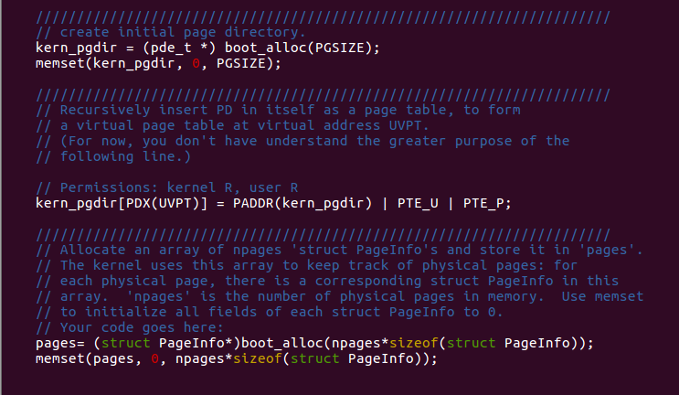
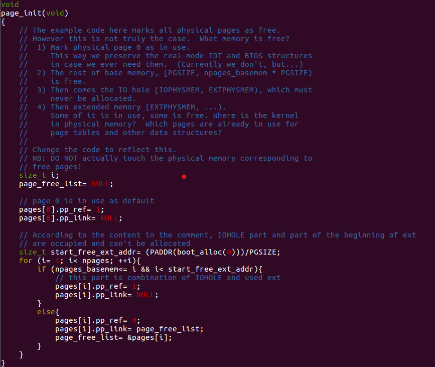
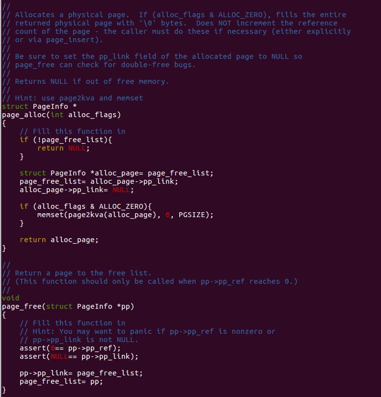

Lab 2: Memory Management
Overview
After a long time I've finished Lab 2's task, here I take the notes about my experiment process. This post mainly shows some subtle principle behind the we programmer can use limited memory freely without worrying about causing security trouble. In my opinion, this is totally an art of space management.
Entire Layout Of Virtual Address Space
We can check the design about layout that JOS uses in
inc/memlayout.h. And there are lots of useful Macro which
help us locate the position in virtual address space.

The region above UTOP is the main stage in lab 2. As for
Invalid Memory mentioned in the picture. According to the
comment is function mem_init, which is the main character
in this lab, it's a "guard page" to monitor.
## Experiment Process
Nowadays, operating system using virtual memory to manage the limit physics resources to satisfy the demand from the real situation in application that required by multi-process. In JOS, the specific method to achieve protected-mode memory management is the combination of segmentation and page translation. Here is a Link introduce details about this method. Honestly, I was deeply amazed by its subtle design at first sight, although it's also really confused to me.

As shown above, the entire translation divided into two steps.
First, with the Selector in the visible part of
segment registers and Offset which is used as C
Pointer by programmer, we can fetch a Linear
Address. GDT & LGDT are the main
characters at segmentation translation part. It's detail had been
handled pretty well at lab 1. (In boot/boot.S, we installed
a Global Descriptor Table (GDT) that effectively disabled segment
translation by setting all segment base addresses to 0 and limits to
0xffffffff. Hence the "selector" has no effect and the
linear address always equals the offset of the virtual address. )
The second is what we have to care about. As mentioned in the upper link, 80386 use Two levels of tables to address a page of memory. cr3 act similar to what GDT & LGDT act in segmentation translation but not the same. More details, the upper link showed pretty well. We aren't wasting time at here.

Part 1 Before Paging: Physical Page Management
Before we gonna using page table, where exactly it was? The answer is we have to allocate that part by ourselves at the very beginning.
Let's check about our main character: mem_init

The code calling i386_detect_memory needs to read this
device hardware in order to figure out how much physical memory there
is, but that part of the code is done for you: you do not need to know
the details of how the CMOS hardware works.
The operating system must keep track of which parts of physical RAM are free and which are currently in use. JOS manages the PC's physical memory with page granularity so that it can use the MMU to map and protect each piece of allocated memory.
We'll now write the physical page allocator. It keeps track of which
pages are free with a linked list of struct PageInfo
objects (which, unlike xv6, are not embedded in the free pages
themselves), each corresponding to a physical page. You need to write
the physical page allocator before you can write the rest of the virtual
memory implementation, because your page table management code will need
to allocate physical memory in which to store page tables.
Because we haven't allocate page table yet, so before we can
allocate page, we have to use some primal method:
boot_alloc. As shown in comment, after we use this method
allocate space for kernel page directory and an array of
struct PageInfo which is used to record information about
physical pages, we must abandon this method and using the operation
family related to pages management.

Follow the guidance in the comment, my solution about this function
were shown above. The tricky part is end array, you can
find more details in the *.ld file. This trick assign our
beginning of free memory to the kernel's end of .bss
segment.

Our boot_alloc help us allocate space for kernel
page directory and an array of struct PageInfo. Then,
let's initialize our allocated array.

Although we're manipulating an array, however, for more flexible allocate pages, we use a link list to manage this array. And pay attention to the comments, it gave us the detailed instructions about which pages were free, which pages were occupied.
Naturally, we can use page as manipulation unit. My solution was shown below.

I recommend you use assert to alert too.
Part 2: Virtual Memory
As mention before, modern operation system use this mechanism to manage the memory. This part is the highlight in this lab, we're gonna achieve lots of tool function used for this management by ourselves. And this part requires very clear knowledge about the upper tutorial in the link about segmentation and page translation.
Recall that in part 3 of lab 1, we installed a simple page table so that the kernel could run at its link address of 0xf0100000, even though it is actually loaded in physical memory just above the ROM BIOS at 0x00100000. This page table mapped only 4MB of memory. In the virtual address space layout you are going to set up for JOS in this lab, we'll expand this to map the first 256MB of physical memory starting at virtual address 0xf0000000 and to map a number of other regions of the virtual address space.
Here are some details have to be noticed. The JOS kernel often needs
to manipulate addresses as opaque values or as integers, without
dereferencing them, for example in the physical memory allocator.
Sometimes these are virtual addresses, and sometimes they are physical
addresses. To help document the code, the JOS source distinguishes the
two cases: the type uintptr_t represents opaque virtual
addresses, and physaddr_t represents physical addresses.
Both these types are really just synonyms for 32-bit integers
(uint32_t), so the compiler won't stop you from assigning
one type to another! Since they are integer types (not pointers), the
compiler will complain if you try to dereference them.
The JOS kernel can dereference a uintptr_t by first
casting it to a pointer type. In contrast, the kernel can't sensibly
dereference a physical address, since the MMU translates all memory
references. If you cast a physaddr_t to a pointer and
dereference it, you may be able to load and store to the resulting
address (the hardware will interpret it as a virtual address), but you
probably won't get the memory location you intended.
We can check this by using gdb and
qemu.

And in future labs we will often have the same physical page mapped
at multiple virtual addresses simultaneously (or in the address spaces
of multiple environments). We will keep a count of the number of
references to each physical page in the pp_ref field of the
struct PageInfo corresponding to the physical page. When
this count goes to zero for a physical page, that page can be freed
because it is no longer used. In general, this count should be equal to
the number of times the physical page appears below
UTOP in all page tables (the mappings above
UTOP are mostly set up at boot time by the kernel and
should never be freed, so there's no need to reference count them).
We'll also use it to keep track of the number of pointers we keep to the
page directory pages and, in turn, of the number of references the page
directories have to page table pages.
At first, let's implement two "searching funciton"
These function return the page table entry for inquired virtual
address(more specifically, it's linear address). It will create a new
page table if create is set and there didn't exist
corresponding page table entry before asking.
And with the help of pgdir_walk we can implement the
other "searching function"

This function returns struct PageInfo which contains the
information about the physical page corresponding to the virtual
address, and if necessary, it will fetch page table entry by
pte_store.
Before we design a "insert" function, we have to design a "remove" function, because we have to prepare a space for the page we have to insert.

Check about page_decref function, it helps update
pp_ref for us.
And here is the function needs to be careful: "insert".

As mentioned in the comments, we've considered the corner case
mentioned in it. And handle everything in one code path way. However, we
must update pp_ref before we remove existed page. Because,
if the order is reversed, after page_remove, that physical
page might be recycled incorrectly.
Next function used for allocate space for kernel part in the virtual address space.

Just follow the advice in comment, and remember, do
not update pp_ref field in this function.
It should be done by its sub-function.
Part 3: Kernel Address Space
Since kernel and user memory are both present in each environment's
address space, we will have to use permission bits in our x86 page
tables to allow user code access only to the user part of the address
space. Otherwise bugs in user code might overwrite kernel data, causing
a crash or more subtle malfunction; user code might also be able to
steal other environments' private data. Note that the writable
permission bit (PTE_W) affects both user and kernel
code!
The user environment will have no permission to any of the memory
above ULIM, while the kernel will be able to read and write
this memory. For the address range [UTOP,ULIM), both the
kernel and the user environment have the same permission: they can read
but not write this address range. This range of address is used to
expose certain kernel data structures read-only to the user environment.
Lastly, the address space below UTOP is for the user
environment to use; the user environment will set permissions for
accessing this memory.
In a word, we have to achieve permissions and fault isolation.
Follow the advice in comment, we can achieve the easiest task in lab 2.
Others
Attention here, before use make grade, be sure you've
remove panic lines mentioned in mem_init.
It seems like this:
And this is the grade if you've correctly achieve the tasks in lab2: